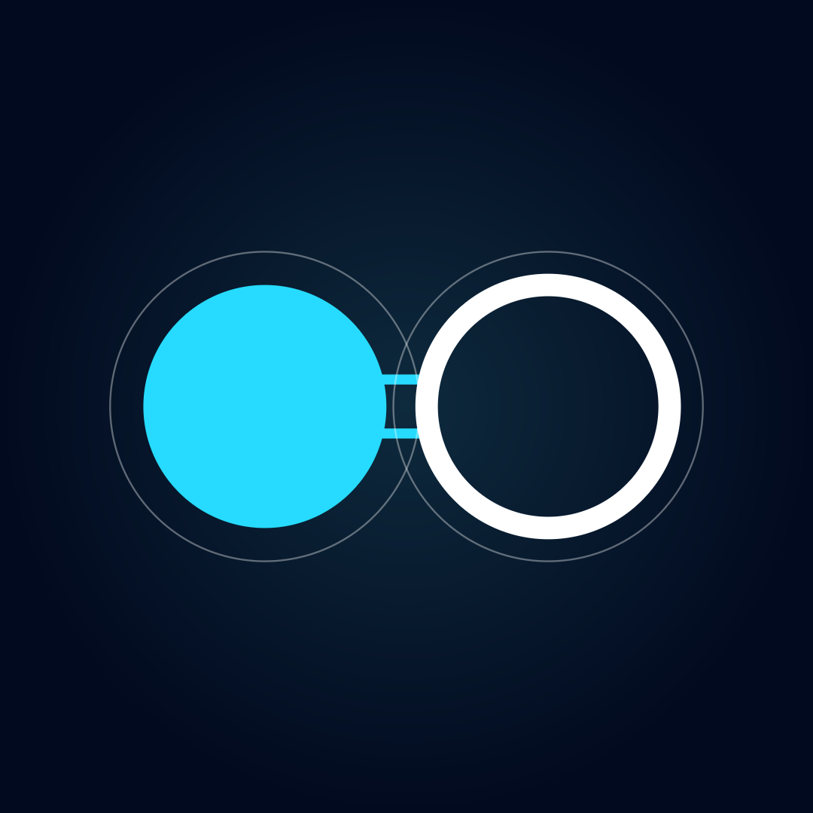

Choose a component
Select a packaged component to read its exact included license text.
Component
Version unavailableChoose a component to read its license.

First launchReview the terms for the official Ionic Desktop distribution and related services published by Tactico Technologies (Publishers).
The Ionic CLI and source remain available under the MIT License if you decline.
Loading agreement…
Exact license texts packaged with this Ionic Desktop build.
Loading packaged licenses…
Choose a component to read its license.
Ionic Desktop could not verify its included managed engine. Restore that connection, choose another Ionic executable, or retry the check.
No telemetry. The desktop wrapper never phones home.
The promises agents make to the rest of your system.
Inspect its inputs, outputs, tools, and dependencies.
Scan local instruction files, review conflicts, then sync selected agents to the registry.
Add repositories to begin. Saved repositories scan structurally at launch.
This updates registry baselines. Ionic never edits your Markdown files.
Add local repositories, then scan now or let Ionic run a local structural scan at the next launch. No files are watched or uploaded.
Arrows read left to right: an agent needs something from the next.
Register a folder to map how your agents depend on one another.
Focus a node to hear its dependency summary.
Compare a proposal with the registered baseline and its dependents.
Drag to resize. Use the left and right arrow keys for precise adjustments, Shift with an arrow key for larger adjustments, Home or End for limits, and Enter to reset.
Try a theme, provider, connection, workspace, or engine term.
Choose the contrast and surface depth that fits your workspace.
Changing the base loads Ionic’s accessible starter palette. Hex values must keep text, controls, and focus indicators readable. Imported and exported JSON stays local and contains only these palette tokens.
--canvas
--sidebar
--surface
--border
--text
--muted
--accent
Choose how optional semantic reviews are evaluated.
Authentication not inspected
Authentication not inspected
Choose the runtime Ionic should use for optional semantic review. Installed and authenticated are separate states. Changing this mode or selection never enables semantic review automatically.
Authentication and model inspection happen only after a labeled action above.Defaults applied whenever you open a compatibility check.
Choose the contract registry this desktop workspace reads.
Control the verified Ionic CLI used by this desktop app.
Ionic verifies the desktop protocol before using a custom executable. The included managed engine requires no Python installation.
Licenses and notices included with this distribution.